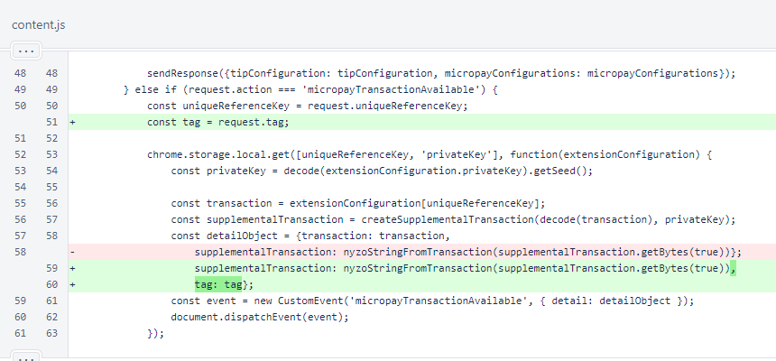
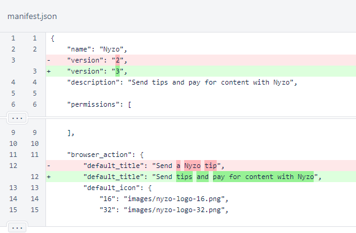
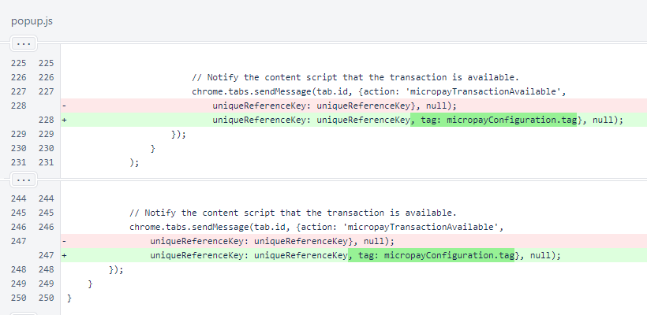
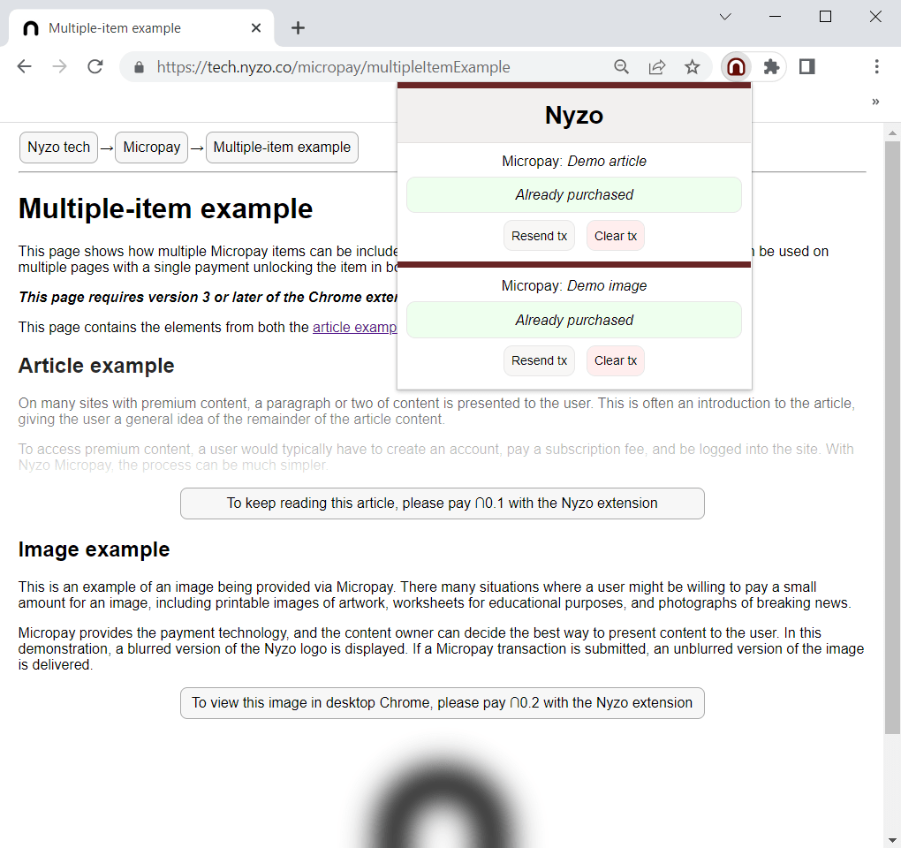

Nyzo Chrome extension version 3 (commit on GitHub) improves support for including multiple Micropay items in a single web page.
In the content script, the tag from the request is now passed back to the document along with the transaction and supplemental transaction.
The description was updated in the manifest. This should have been updated in version 2.
In the popup script, the tag from the micropay configuration is now passed back to the tab along with the unique reference key. This is redundant, as the unique reference key is a concatenation of the receiver identifier and the tag, but adding a parameter is much more reasonable and readable than extracting the tag from the key when the message is received.
The multiple-item Micropay example takes advantage of this tag to handle both article and image content on the same page. This was possible with version 2 of the extension, but it would have required tag extraction from the transaction sender data.
